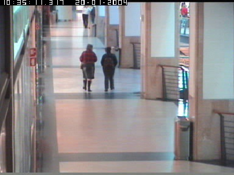

DATA GEOMETRY
라벨의 좌표 기준부터 확인하기
CAVIAR XML은 중심 좌표와 폭·높이를 사용했습니다. 실제 속성인 xc·yc·w·h를 확인하고, 학습에 사용할 xyxy 박스로 변환했습니다.
xc, yc, w, h
↓
x1, y1, x2, y2실내 로봇의 보행자 인식,
데이터부터 모델까지 직접.
작은 데이터셋에서 시작해 사람 탐지기를 구현하고,
모델의 오검출까지 확인한 개발 기록입니다.

이동 로봇이 보행자와 안전하게 함께 움직이려면 영상 속 사람을 찾고, 이동을 추적하고, 미래 경로를 비교하는 과정이 필요합니다.
이 프로젝트는 그 첫 단계인 사람 탐지에 집중했습니다. 데이터 검수부터 모델 구조, 정답 배정, 손실함수, 학습과 추론을 PyTorch 연산으로 직접 연결했습니다.
먼저 만든 2D 회피 시뮬레이터 보기person독립 영상의 AP·Recall, 이동 카메라 대응, 실시간 위험 판단은 후속 단계입니다.
완성된 탐지기를 호출하는 대신,
입력부터 출력까지 모듈 단위로 구현하고 검증했습니다.
합성곱, GroupNorm, ReLU로 구성한 소형 CNN입니다. 세 단계의 특징맵을 다음 모듈로 전달합니다.
x = self.stem(images)
c2 = self.stage2(x)
c3 = self.stage3(c2)
c4 = self.stage4(c3)
return {'c2': c2, 'c3': c3, 'c4': c4}C2 [32, 72, 96] · C3 [64, 36, 48] · C4 [128, 18, 24]
장면과 표시할 박스를 바꿔보세요.
모델이 잡은 사람과 실수를 함께 확인할 수 있습니다.
12장으로 200 step 반복 학습한 모델의 저장된 결과를 표시합니다. 필터는 0.30 이상으로 저장된 후보를 추가로 걸러냅니다. P 번호는 이미지 안의 박스 순번입니다.
뒤쪽 프레임은 같은 영상에서 학습에 쓰지 않은 이미지입니다. 독립된 장소의 평가나 일반화 성능을 입증하는 결과로 해석하지 않습니다.
점은 각 배치의 손실을 나타냅니다. 학습에 사용한 12장에 대한 기록이며 독립 영상의 정확도 지표는 아닙니다.
CAVIAR XML은 중심 좌표와 폭·높이를 사용했습니다. 실제 속성인 xc·yc·w·h를 확인하고, 학습에 사용할 xyxy 박스로 변환했습니다.
xc, yc, w, h
↓
x1, y1, x2, y2가로 교집합 계산에서 왼쪽 거리를 두 번 쓴 오류를 수정했습니다. 비대칭 박스의 수치 예제로 공식을 확인하고, gradient 검사도 별도로 진행했습니다.
IoU(box, box) = 1
−log(1) = 0전체 218개 박스 중 217개에 학습 위치가 배정됐습니다. 프레임 120의 폭 4픽셀 박스는 stride 4 격자 내부에 점이 없었습니다. 라벨을 유지하고 해상도·특징맵 개선 항목으로 기록했습니다.
assignment coverage
217 / 218실제 예측을 그려 시설물 오검출, 겹친 사람의 중복 박스, 큰 사람의 부분 탐지를 확인했습니다. 다음 단계는 IoU 매칭으로 누락과 오검출을 정리하고 다른 영상에서 평가하는 것입니다.
영상 모델을 만들기 전에, 2D 공간에서 로봇의 감속·정지·재출발을 먼저 구현했습니다.
가상의 보행자 궤적과 원형 footprint를 사용해 시간 구간의 충돌을 검사합니다. 현재 위치만 사용하는 방식과 일정 속도 예측 방식을 비교할 수 있습니다. 웹 화면에서는 미리 계산해 저장한 실험 결과를 재생하며, 지표는 선택한 장면·방식의 전체 주행 요약입니다.
합성 장면의 기능 실험입니다. 학습한 탐지기와의 연결 및 실물 로봇 검증은 후속 작업입니다.